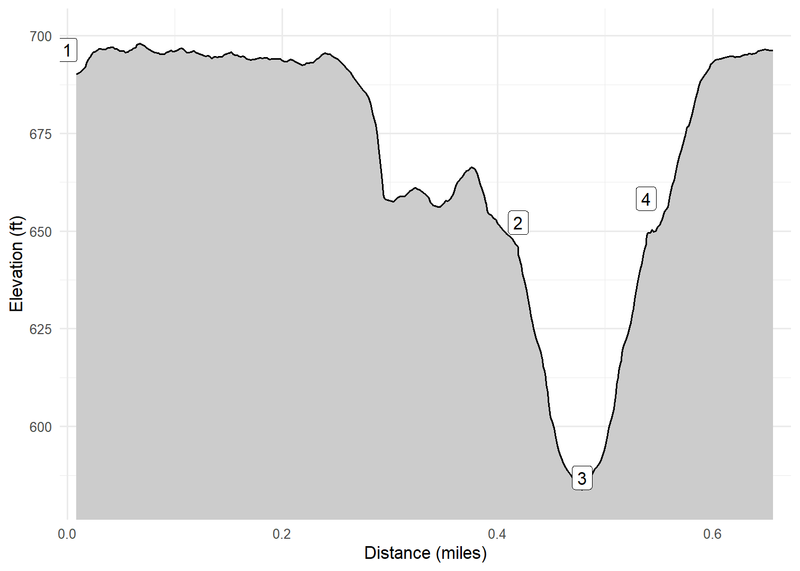

Bayshore County Park
XXX
On April 14, 2023, Kim, Cash and I walked
Walk-Specific Map
Elevation Profile

Images
GPX Download
A sanitized GPX file of our hike is here.
Summary Information
| NUM | trackID | Primary | Description | Distance | CumDist | DeltaElev |
|---|---|---|---|---|---|---|
| 1 | DCBSHPK01 | Bay Shore County Park | Parking area to Spur to lake | 0.42 | 0.42 | -44 |
| 2 | DCBSHPK02 | Bay Shore County Park | Main trail to lake | 0.06 | 0.48 | -65 |
| 3 | DCBSHPK02 | Bay Shore County Park | lake to Main trail | 0.06 | 0.54 | 65 |
| 4 | DCBSHPK03 | Bay Shore County Park | Spur to lake to Parking area | 0.13 | 0.67 | 42 |